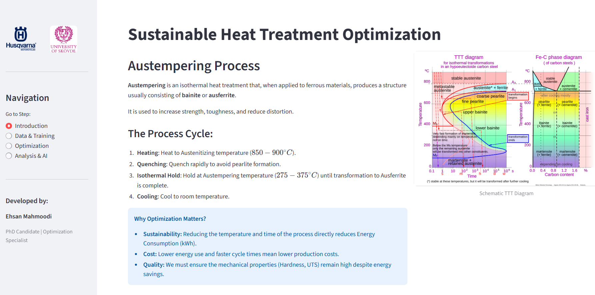

Resilience-Driven Manufacturing (SMART)
With Volvo Penta, ABB, Daloc and Xylem. A resilient factory is not one that never gets hit — it is one whose output dips shallowly and recovers fast. I build the multi-objective scheduling that keeps that true when energy prices and renewable availability move hour to hour.

Multi-Agent AI for Sustainable Manufacturing (AI-COMPETE)
With Volvo Penta, Scania and Daloc. Productivity and carbon footprint pull against each other, so the system is built as agents that negotiate rather than one objective function that quietly sacrifices the other.

Agile Manufacturing in Industry 4.0 (ACCURATE 4.0)
The programme my doctoral work sat inside. Optimisation-enabled digital twins, augmented reality and advanced sensing, across three strands: line balancing with human-robot collaboration, dynamic bottleneck analysis, and AR-assisted collision avoidance.
Throughput Bottleneck Analysis in Industry 4.0
The bottleneck in a real line is not a fixed machine — it migrates as the shift wears on. This strand built cloud cyber-physical sensing to detect the shift as it happens and reallocate resources against it, rather than optimising yesterday's constraint.

Sustainable Heat Treatment Optimization
Austempering parameters for ductile iron used to be found by running physical experiments. This platform predicts the outcome instead — gradient-boosted models over the process window, with a GPT-4 layer that explains why a given setting works to the engineers who have to trust it.
Energy-Aware Batch Scheduling
Batch production, spot electricity pricing and on-site renewable generation in one model. Jobs are pulled into cheap, solar-rich hours and flexible maintenance is used to fill the expensive gaps instead of blocking the line. Solved with MOVNS and NSGA-II against constraint-programming bounds.

Twin Crane Simulation
Two cranes on one rail that cannot pass each other. The interesting part is not scheduling them but recovering when both are loaded and facing each other. Spatial reservation of track segments, collision avoidance, and forced-yield deadlock recovery, across thirteen iterations.
Alloy Property Forecasting
Predict hardness, tensile and yield strength from composition and heat treatment, then search the composition space for alloys that hit several property targets at once. Stacked ensembles with an explicit overfitting index, so strategies are compared honestly rather than on a lucky split.
SME Data Navigator
A small operator cannot read a national statistics release and do anything with it. This turns published cost-pressure figures into what it means for this business, this month — a health check, a fair-rate index and a tender check. Four design iterations.

Maintenance Optimisation, Sulfuric Acid Plant
Three maintenance strategies compared over eighteen scenarios on a 24/7 plant, ranked by TOPSIS across downtime, cost, crew utilisation and spares. Predictive maintenance cut annual downtime by 96.6% and monthly maintenance cost by 91.5%. Later rebuilt as a Python NSGA-II model for crew sizing.

SME-Scale Biodiesel Production for Northern Iran
My 2009 bachelor project was a study of transesterification chemistry — acid and base catalysis, supercritical methanol, enzymatic routes. Useful, but it stopped at the chemistry. This is the project it should have been: a 3,000 t/yr plant sized for a cooperative in Gilan or Mazandaran, running on used cooking oil and regional rapeseed.
Feedstock availability, process train, mass and energy balance, capital and operating cost, glycerol as a second revenue line, and the payback period that decides whether any of it happens. Engineering only becomes a project when the numbers close.

10 MW Photovoltaic Plant, Nir
On-grid solar plant in Yazd province: 36,432 modules, nine SMA central inverters, 20,465 MWh in year one at an 87% performance ratio. I authored the project profile and the financial model — €11.79 M investment, €25.8 M NPV, 27% IRR — through to signed PPA, land, permits and international due diligence.

Cardiac Cath Lab Flow, Moheb-e-Mehr Hospital
One procedure table, three procedure types and no fixed admission schedule — patients are called when their cardiologist happens to be in the lab. I modelled the whole path from 7:30 clinic arrival to discharge, including the monitored-bed constraint that forces transfers when an angiography becomes an angioplasty mid-procedure.

Eye Surgery Clinic Simulation, Basir
New patients and post-operative reviews share the same corridor, and the doctor is the bottleneck for both. Built in Arena with distributions fitted in Input Analyzer, scored on two measures held in tension — mean queue time and the opportunity cost of that queue — so that tripling staff to halve the wait had to justify itself. Scenarios ranked by TOPSIS and AHP.

Assembly Line Balancing & Sequencing
Two decisions that cannot be taken separately: assign tasks to stations under precedence and cycle-time limits, then sequence the product variants so no station is repeatedly overloaded. Built as an animated Arena model so the line stoppage could be seen, not just tabulated.

Offshore Supply Vessel Fleet Sizing & Routing
How many vessels does an offshore field actually need, and on what routes, when demand is stochastic and weather takes vessels out of service unpredictably? Simulation-based multi-objective optimisation trading fleet size against service level. The work behind two journal papers.
Airport Terminal 3D Model
Passenger flow from curbside to gate, built as a 3D Arena model with a live dashboard. The point of the 3D was not decoration — a terminal layout and its staffing plan are much easier to argue about when stakeholders can watch the queue form.

Digital ID Card Distribution Centres
Process design for the centres where citizens actually collect a digital ID: the service steps, the data transitions behind them, and what the data centre has to carry. Applicants do not arrive as one population — first-time, renewal, replacement and assisted cases have different service times, so the queue behaves differently depending on the local mix.
The model produced processing time, time in system and staffing per counter, and from those the question the rollout actually needed answered: how many centres each region requires given its population.

Hospital Supply Chain Efficiency
Benchmarking hospital logistics units with data envelopment analysis, where the normal inventory trade-off breaks down: a stockout of a critical item is not a cost line, it is a clinical event. Service level and holding cost had to be weighed on those terms.

Productivity Measurement with ANP
Productivity criteria influence each other — capital investment changes labour requirements, which changes process design. A plain AHP hierarchy cannot express that, so this was built as an analytic network process in SuperDecisions across eight revisions, with supermatrix convergence analysis.
Information Flow in MTO Supply Chains
A system-dynamics model of what happens when demand information reaches upstream partners late and distorted. Order swings amplify along the chain; sharing information damps them. Built in Vensim with policy scenario runs.
Benchmarking Commercial Sim-Opt Packages
Practitioners were choosing between OptQuest and Witness Optimizer on vendor claims because nobody had tested them side by side. We did — same problems, same budgets — on solution quality, convergence speed and robustness to simulation noise.

KPI to Strategy Modelling, Asiatech
Sales, R&D, service quality and operations each had their own dashboards, and none of them explained whether the company was getting closer to its strategic goals. The work was building the cause-and-effect structure: which measures actually move a goal, and which are just being counted.

Digital Twin for Network Maintenance Planning
A live digital twin of a nationwide telecom network — 3,880 monitored elements across xDSL, wireless backhaul, IP backbone, server farms and enterprise links — rolled up from element state to provincial availability, with round-trip time and packet loss tracked alongside it.
Two failure modes had to be planned for differently: a wired run fails outright, a wireless hop degrades gradually. The twin drives preventive and corrective policy per link type, with crew routing and spares held against how critical each link is.